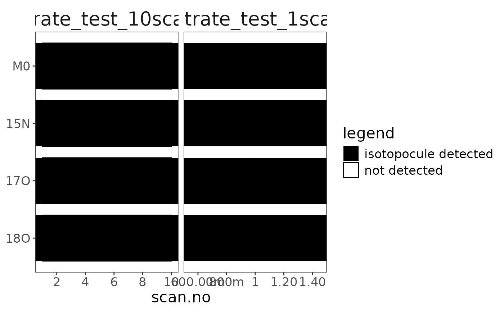

This step-by-step functionality guide is still in development. Eventually all functions in the package structure flowchart will be covered with detailed examples. All functions below labelled with an
*are required steps of the standard data processing flow. Everything else is optional. Rarely used additional features that are mentioned here but not part of the standard flowchart are labeled asbonus.
Reading raw files
First step is reading in your .raw data files.
orbi_find_raw()
# path to your data folder
data_folder <- file.path("data")
# finding raw files with "nitrate" in the name in the data folder
file_paths <- data_folder |> orbi_find_raw(pattern = "nitrate")
# show what was found
file_paths[1] "data/nitrate_test_10scans.raw.cache.zip"
[2] "data/nitrate_test_1scan.raw.cache.zip"
orbi_read_raw() *
# read files (simplest)
raw_files <- file_paths |> orbi_read_raw()
# read files including some raw spectra
raw_files <-
file_paths |>
# load the spectra from scans 1, 10, and 100
orbi_read_raw(include_spectra = c(1, 10, 100)) |>
# you can quiet any call with suppressMessages
# that way it won't print the info message
suppressMessages()
# show summary for the files that were read
raw_files
orbi_aggregate_data() *
Combine (aggregate) the data from the raw files.
# aggregate raw data
agg_data <- raw_files |> orbi_aggregate_raw()
# shaw all that was recovered
# (as well as what was ignored/not aggregated)
agg_databonus orbi_get_aggregator()
You can optionally use a different aggregator. The
minimal aggregator contains a smaller set of columns to
aggregate. The extended aggregator is more elaborate,
providing access to additional columns from the raw data files.
# example: minimal vs. extended aggregator
orbi_get_aggregator("minimal")
orbi_get_aggregator("extended")
# using the extended aggregator instead of the default (standard)
raw_files |> orbi_aggregate_raw(aggregator = "extended")bonus orbi_register_aggregator()
Or even build your own aggregator with
orbi_start_aggregator() and/or expand an existing one with
orgi_add_to_aggregator() and then register it via
orbi_register_aggregator(). This funnctionality is rarely
needed and thus not part of the package structure flowchart.
my_agg <-
orbi_get_aggregator("minimal") |>
# pull out the S-Lens RF Level information from the scans and store it as a number
orbi_add_to_aggregator("scans", "slens_rf", source = "S-Lens RF Level", cast = "as.numeric") |>
orbi_register_aggregator(name = "test")
# show my agg summary
my_agg
# use it
raw_files |> orbi_aggregate_raw(aggregator = "test")bonus orbi_get_problems()
There were no problems reading and/or aggregating the raw data so these are empty but this can be very helpful to see what went wrong during reading or aggregation.
raw_files |> orbi_get_problems()# A tibble: 0 × 6
# ℹ 6 variables: uidx <int>, file <chr>, type <chr>, call <chr>, message <chr>,
# condition <list>
agg_data |> orbi_get_problems()# A tibble: 0 × 6
# ℹ 6 variables: uidx <int>, file <chr>, type <chr>, call <chr>, message <chr>,
# condition <list>
orbi_get_data()
At this point (and any later point), you can always extract the data
of interest from the aggregated data set using
orbi_get_data(). If you prefer working with a data frame
tibble from orbi_get_data() instead of the aggregated data
structure, you can switch to that at any point and use the resulting
data frame tibble in subsequent functions.
# direct access to the data stored in the aggregated dataset
agg_data$file_info# A tibble: 2 × 44
uidx filepath filename creation_date in_aquisition Operator
<int> <chr> <chr> <dttm> <lgl> <chr>
1 1 data/nitrate_test_1… nitrate… 2025-01-30 13:57:12 FALSE SYSTEM
2 2 data/nitrate_test_1… nitrate… 2025-01-30 14:01:04 FALSE SYSTEM
# ℹ 38 more variables: FileDescription <chr>, MassResolution <chr>,
# SpectraCount <chr>, FirstSpectrum <chr>, LastSpectrum <chr>,
# StartTime <chr>, EndTime <chr>, LowMass <chr>, HighMass <chr>,
# InstrumentCount <chr>, InstrumentModel <chr>, InstrumentName <chr>,
# SerialNumber <chr>, SoftwareVersion <chr>, HardwareVersion <chr>,
# RawFileVersion <chr>, InstrumentUnits <chr>, Comment <chr>, SampleId <chr>,
# SampleName <chr>, SampleType <chr>, SampleWeight <chr>, …
agg_data$scans# A tibble: 11 × 17
uidx scan.no time.min tic it.ms resolution microscans basePeakMz
<int> <int> <dbl> <dbl> <dbl> <dbl> <int> <dbl>
1 1 1 0.00454 4336653 68.3 60000 1 62.0
2 1 2 0.00675 3391426. 80.6 60000 1 62.0
3 1 3 0.00897 3665948. 79.5 60000 1 62.0
4 1 4 0.0112 5965333 100. 60000 1 62.0
5 1 5 0.0134 2595905. 94.3 60000 1 62.0
6 1 6 0.0156 4273768. 55.3 60000 1 62.0
7 1 7 0.0181 3134818. 131. 60000 1 62.0
8 1 8 0.0203 3522451. 78.7 60000 1 62.0
9 1 9 0.0225 4324210. 109. 60000 1 62.0
10 1 10 0.0247 3553078. 95.7 60000 1 62.0
11 2 1 0.00399 6382695 56.6 60000 1 62.0
# ℹ 9 more variables: basePeakIntensity <dbl>, lowMass <dbl>, highMass <dbl>,
# rawOvFtT <dbl>, intensCompFactor <dbl>, agc <chr>, agcTarget <int>,
# numberLockmassesFound <int>, analyzerTemperature <dbl>
agg_data$peaks# A tibble: 138 × 9
uidx scan.no mzMeasured intensity baseline peakNoise peakResolution
<int> <int> <dbl> <dbl> <dbl> <dbl> <dbl>
1 1 1 62.0 1211. 8.32 513. 70900
2 1 1 62.0 1463. 8.32 513. 94100
3 1 1 62.0 1172. 8.31 513. 80300
4 1 1 62.0 1116. 8.30 513. 87900
5 1 1 62.0 4046979 8.28 513. 114902
6 1 1 62.0 1798. 8.26 513. 86300
7 1 1 62.0 1444. 8.26 513. 93200
8 1 1 62.0 1346. 8.25 513. 84700
9 1 1 62.0 1469. 8.25 513. 92400
10 1 1 62.1 1043. 8.16 513. 89900
# ℹ 128 more rows
# ℹ 2 more variables: isRefPeak <lgl>, isLockPeak <lgl>
agg_data$spectra# A tibble: 943 × 4
uidx scan.no mz intensity
<int> <int> <dbl> <dbl>
1 1 1 60.9 0
2 1 1 60.9 0
3 1 1 60.9 0
4 1 1 60.9 0
5 1 1 62.0 0
6 1 1 62.0 0
7 1 1 62.0 0
8 1 1 62.0 0
9 1 1 62.0 496.
10 1 1 62.0 935.
# ℹ 933 more rows
# better way to retrieve+combine the data with dplyr select syntax:
agg_data |>
orbi_get_data(
file_info = c("filename", "creation_date", "instrument" = "InstrumentModel"),
scans = c("time.min", "tic", "resolution"),
peaks = c("mz" = "mzMeasured", starts_with("peak"))
)# A tibble: 138 × 11
uidx filename creation_date instrument scan.no time.min tic
<int> <chr> <dttm> <chr> <int> <dbl> <dbl>
1 1 nitrate_test_10… 2025-01-30 13:57:12 Orbitrap … 1 0.00454 4.34e6
2 1 nitrate_test_10… 2025-01-30 13:57:12 Orbitrap … 1 0.00454 4.34e6
3 1 nitrate_test_10… 2025-01-30 13:57:12 Orbitrap … 1 0.00454 4.34e6
4 1 nitrate_test_10… 2025-01-30 13:57:12 Orbitrap … 1 0.00454 4.34e6
5 1 nitrate_test_10… 2025-01-30 13:57:12 Orbitrap … 1 0.00454 4.34e6
6 1 nitrate_test_10… 2025-01-30 13:57:12 Orbitrap … 1 0.00454 4.34e6
7 1 nitrate_test_10… 2025-01-30 13:57:12 Orbitrap … 1 0.00454 4.34e6
8 1 nitrate_test_10… 2025-01-30 13:57:12 Orbitrap … 1 0.00454 4.34e6
9 1 nitrate_test_10… 2025-01-30 13:57:12 Orbitrap … 1 0.00454 4.34e6
10 1 nitrate_test_10… 2025-01-30 13:57:12 Orbitrap … 1 0.00454 4.34e6
# ℹ 128 more rows
# ℹ 4 more variables: resolution <dbl>, mz <dbl>, peakNoise <dbl>,
# peakResolution <dbl>
Identifying isotopocules
The next step is identifying isotpocules.
orbi_identify_isotopocules() *
# list of isotopocules (can alternatively be in a tsv/csv/xlsx file)
isotopocules <- tibble(
compound = "nitrate",
isotopolog = c("M0", "15N", "17O", "18O"),
mass = c(61.9878, 62.9850, 62.9922, 63.9922),
tolerance = 1,
charge = 1
)
# identify
data <- agg_data |> orbi_identify_isotopocules(isotopocules)Data checks
orbi_flag_satellite_peas() *
# this can happen here or later on in the workflow
# in the case of these files there are no satellite peaks
data |> orbi_flag_satellite_peaks() |> orbi_plot_satellite_peaks()
orbi_plot_isotopocule_coverage()
# this can happen here or later on in the workflow
data |> orbi_get_isotopocule_coverage()# A tibble: 8 × 10
uidx filename compound isotopocule data_stretch n_points start_scan.no
<int> <fct> <fct> <fct> <int> <int> <int>
1 1 nitrate_test_1… nitrate M0 0 10 1
2 1 nitrate_test_1… nitrate 15N 0 10 1
3 1 nitrate_test_1… nitrate 17O 0 10 1
4 1 nitrate_test_1… nitrate 18O 0 10 1
5 2 nitrate_test_1… nitrate M0 0 1 1
6 2 nitrate_test_1… nitrate 15N 0 1 1
7 2 nitrate_test_1… nitrate 17O 0 1 1
8 2 nitrate_test_1… nitrate 18O 0 1 1
# ℹ 3 more variables: end_scan.no <int>, start_time.min <dbl>,
# end_time.min <dbl>
data |> orbi_plot_isotopocule_coverage()